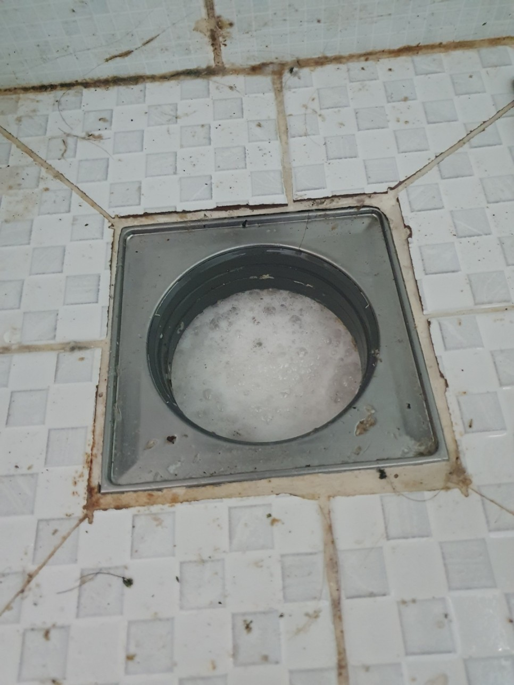
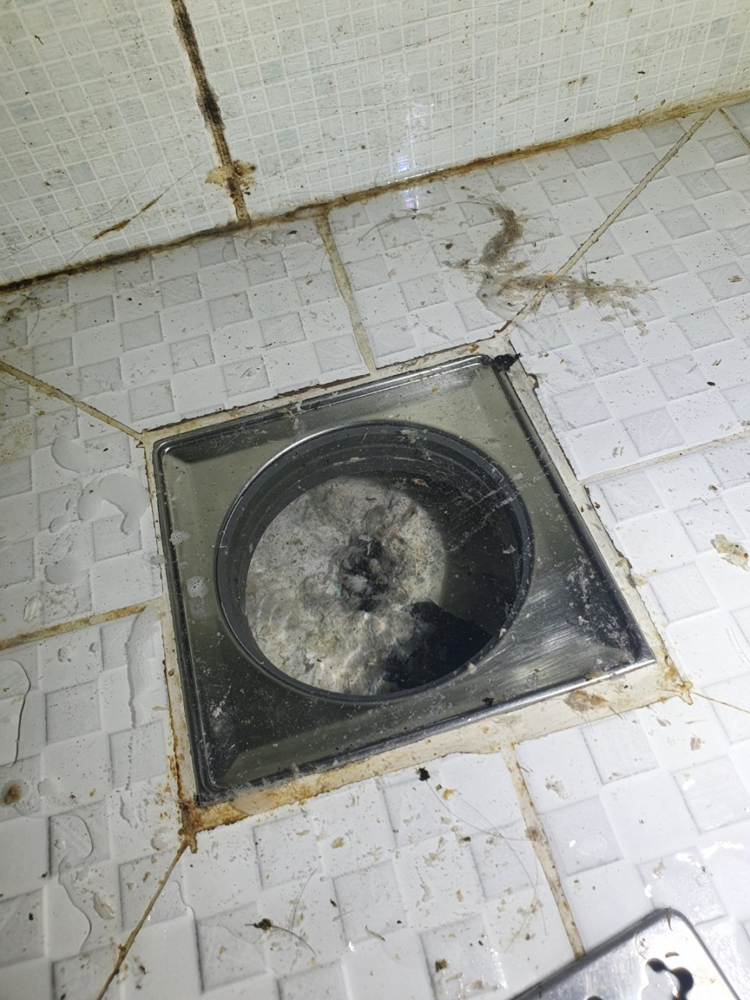
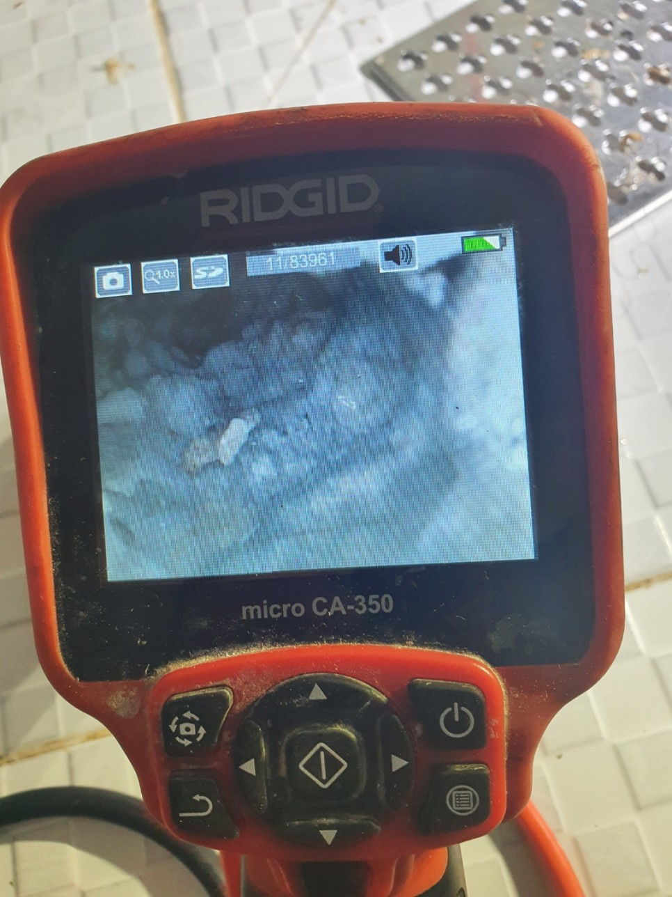
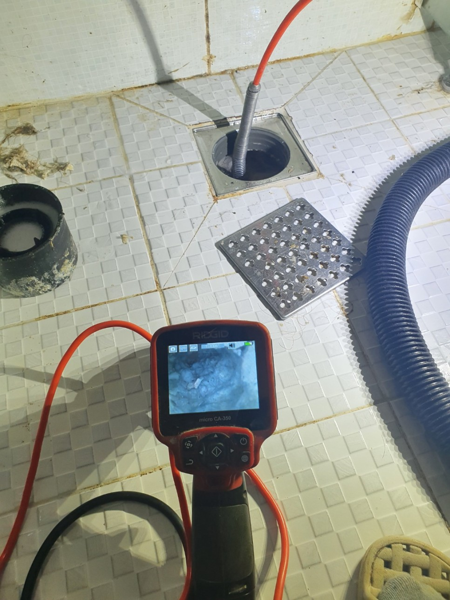
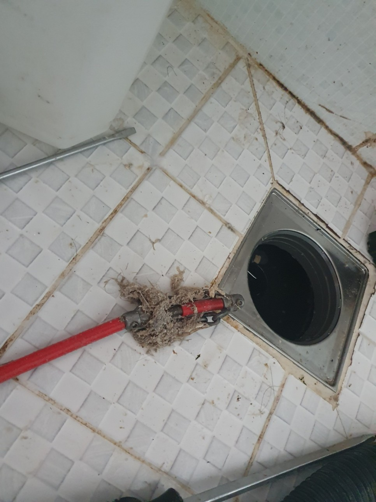
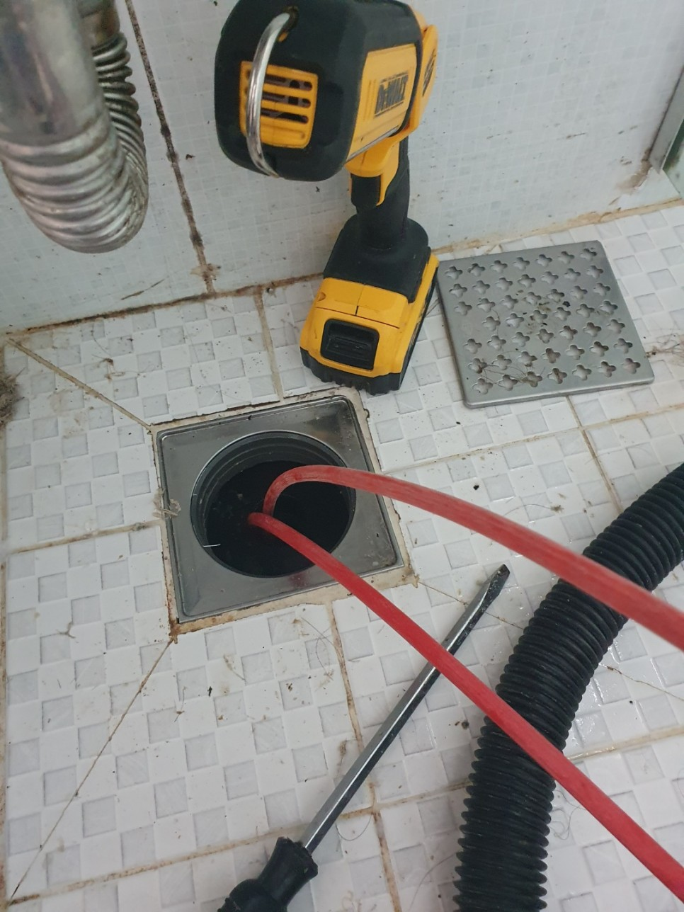

🏠 기흥구 욕실하수구막힘 깔끔하게 해결 완료된 현장 보시죠!
용인 기흥 하수구막힘 전문 시공 후기

📋 작업 개요
- 위치: 용인 기흥, 기흥, 용인
- 서비스 유형: 하수구막힘, 배관막힘, 역류해결, 고압세척
- 작업 일시: 2023. 1. 17. 17:49
- 업체명: 하수구수사대 (010-5615-2118)
🔍 문제 상황
안녕하세요, 하수구수사대입니다!
오늘 보실 현장에는 욕실하수구막힘 작업으로 방문을 통해 해결을 도와드렸습니다.
다음과 같이 욕실 하수구 막힘 현상이 발생되었을 시 저희 업체와 함께 전문적으로 도움을 받아보실 수 있으니 이번 현장 작업 내용과 함께 살펴보시길 바랍니다. 보통 욕실 부분에는 물 배출을 위해 하수구가 필요하며 이는 물 정화와 깨끗한 물을 사용할 수 있는데 중요한 역할을 합니다. 그러나 지속적으로 사용하면 이물질이 쌓이기 마련이지만, 물이 잘 내려가지 못하고 역류까지 하는 현상들로 이는 악취 및 생활에 불편함을 줄 수 있습니다.
특히나 욕실 부분에는 막힘이 있을 시 더욱 문제가 될 수 있으므로 오늘 보시는 기흥구욕실하수구막힘 현장과 막힘이 일어났을 시 주된 원인이 되는 석회석 막힘으로 내용을 함께 확인해 보도록 하겠습니다. 욕실 구간에는 머리를 감고 세안을 하는 등 우리 몸의 일부인 머리카락의 칼슘 성분으로 인해 석회석이 생겨나곤 합니다.

🔎 원인 분석
💡 전문가 진단: 오늘 보실 현장에는 욕실하수구막힘 작업으로 방문을 통해 해결을 도와드렸습니다.
대체적으로 이러한 현장과 같은 막힘 문제를 해결하기 위해서는
배관에서부터 어떠한 이물질들이 쌓여 있는지 걷어내며 제거를 해주어야 합니다. 우선 물이 너무 많은 상태였기에 자칫하면 미끄러울 수 있어 주의하여 진행을 해주었습니다. 석션기 장비를 사용하여 흡입을 도와 제거를 진행하였는데요.
석션기를 통해 고체물질들도 올라와 있는 석회를 확인할 수 있었으며 내시경 카메라를 활용하여 배관 속을 검사해 보았습니다. 역시나 검사를 진행하며 석회가 다양한 형태로 배관이 끼여있는 것을 확인할 수 있었는데요. 석션기로 계속해서 흡입을 하며 기흥구 욕실하수구막힘으로 머리카락이나 석회와로 인해 있던 모습들까지 제거를 할 수 있었습니다.
다음으로 하수구 깊이까지 배관 속에서부터 각종 이물질들이나 머리카락 등 쌓여 있는 모습을 확인할 수 있었는데요. 기흥구 욕실하수구막힘과 같이 원인에 대해 설명을 드렸으며 내시경 카메라와 함께 확인을 도와드렸습니다. 석회석은 생활 찌꺼기들과 함께 발생될 수 있기에 일반 장비만으로 제거가 어렵다고 설명을 드렸습니다.

🔧 작업 과정
저희 업체에서는 배관에 있는 이물질들까지 깔끔하게 제거를 도와드릴 수 있도록 특수 약품을 사용하여 진행을 도와드리기도 합니다. 내시경 카메라를 활용하여 내부 석회 위치를 파악하여 약품을 통해 중화시켜 촉촉한 형태로 만들어 드리고 있는데요.
여기서 장비를 사용하여 고압세척 정도의 힘을 사용해야 하지만 일반 가정집에서 배관에 손상을 입을 수 있어 이물질 제거에 도움이 되는 샤프트기를 사용하여 이물질들을 제거해 드리고 있습니다. 기존의 상태에서 보다 말랑한 형태가 되어 있어 샤프트기를 사용하여 빠르게 제거를 도와드리고 있는데요.
샤프트기는 분쇄 작업으로 유용한 장비이기 때문에
이번 기흥구 욕실하수구막힘 작업에서도 석션기 활용과 함께 흡입하여 제거를 도와드렸습니다. 내시경 카메라를 사용하여 배관 상태를 확인하며 스케일링 작업을 도와드렸습니다. 하수구 막혔을 시에는 셀프 해결이 어려울 가능성이 높아 이렇게 연결되어 있는 부위들까지 제거를 해주셔야 재발을 줄이는데 좋습니다.
화장실 배관에는 석회 머리카락 등 대량 등 쌓여 있는 이물질들을 제거하여 역류의 원인을 해결해 드렸는데요. 머리카락으로 분쇄가 되지 않는 것들로 집게 사용을 통해 제거를 도와드리고 있는데요. 따라서 이러한 사태가 일어나지 않도록 머리카락 등 자주 배출을 해주시는 것이 도움이 될 수 있으며 전문 업체를 통해 재발이 일어나지 않도록 꼼꼼하게 관리를 해주시는 것이 좋습니다.
이번 작업과 마찬가지로 어느 공간에서도 꼼꼼하게 진행을


✅ 작업 완료
도와드리고 있으니 늦지 않게 편히 연락 주셔서 해결해 보시기를 바랍니다.
경기도 용인시 기흥구 동백중앙로 191 8층 c8736호




⚠️ 하수구 배관 막힘 예방 및 관리 가이드
- ✅ 머리카락, 비닐, 물티슈 등 물에 분해되지 않는 이물질은 하수구 유입을 절대 금지해 주세요.
- ✅ 하수구 거름망을 씌우고 모여진 이물질은 주기적으로 쓰레기통에 바로 비워주셔야 합니다.
- ✅ 배관 노후가 심할 경우 이물질이 더 쉽게 걸리므로 주기적인 배관 세척(고압세척 등)을 권장합니다.
- ✅ 작업 후 1년 이내 재발 시 하수구수사대에서 무상 A/S 보증 서비스를 제공합니다.
💡 핵심 정리
- 확실한 장비 작업(내시경 점검 및 샤프트 스케일링)으로 원인을 뿌리 뽑습니다.
- 작업 후 1년 이내에 동일한 부위 재발 시 100% 무상 A/S 서비스를 보장합니다.
- 서울 · 경기 · 인천 전 지역에 24시간 언제든 긴급 출동할 수 있도록 항시 대기 중입니다.
❓ 자주 묻는 질문 (FAQ)
🚨 용인 기흥 하수구막힘 문제로 고민이신가요?
정확한 원인 진단과 확실한 시공으로 재발 없는 해결을 약속드립니다.
24시간 긴급 출동 | 서울 · 경기 · 인천 전지역 | 1년 내 재발 시 무상 A/S